BladeMaster：在线生成持久不连续面的实时机器人切割仿真
1 普渡大学 · 2 加州大学洛杉矶分校 · 3 Envora · 4 丰田研究院 · 5 犹他大学
摘要
切割会改变可变形物体的形状和拓扑，因此很难在机器人操作仿真中准确模拟。仿真器必须在切口逐渐形成时跟踪刀具，在撤刀后保留切割形成的不连续面，并允许新露出的表面与刀具及彼此发生接触。现有方法通常预先指定切割面，或将材料分离与辅助几何场绑定。我们提出 BladeMaster，一种基于全拉格朗日物质点法（TLMPM）的 GPU 加速切割框架。核心思路是根据刀刃几何在线生成持久侧别标记，直接把切割历史编码在物质点上。这些标记决定粒子–网格耦合，使完好材料内部保持连通，并防止撤刀后切口两侧出现虚假耦合。该方法支持逐步切割和相交切割，无需预设切割面或复制粒子。材料–材料接触计算允许切面重新接触并发生相对滑动，同时保留切面间的分离。刀具与材料的双向耦合使材料反力可以改变刀具运动。实验演示了由刀具驱动的切割以及切割后的操作，代表性任务的仿真速度超过实时。项目主页见 https://jango6324.github.io/blademaster/。
I 引言
切割是机器人操作软材料的一项重要能力。刀刃穿过物体时，会使材料变形，将相邻材料区域分开，并与新露出的表面相互作用。真实切割实验成本较高，因为每一刀都会不可逆地损坏试样。准确且高效的仿真器可以支持材料标定、运动规划和策略学习，减少对实物实验的需求 [1, 2, 3]。这样的仿真器必须随刀具运动在线生成切口，并在后续接触和操作中保留由此产生的不连续面。
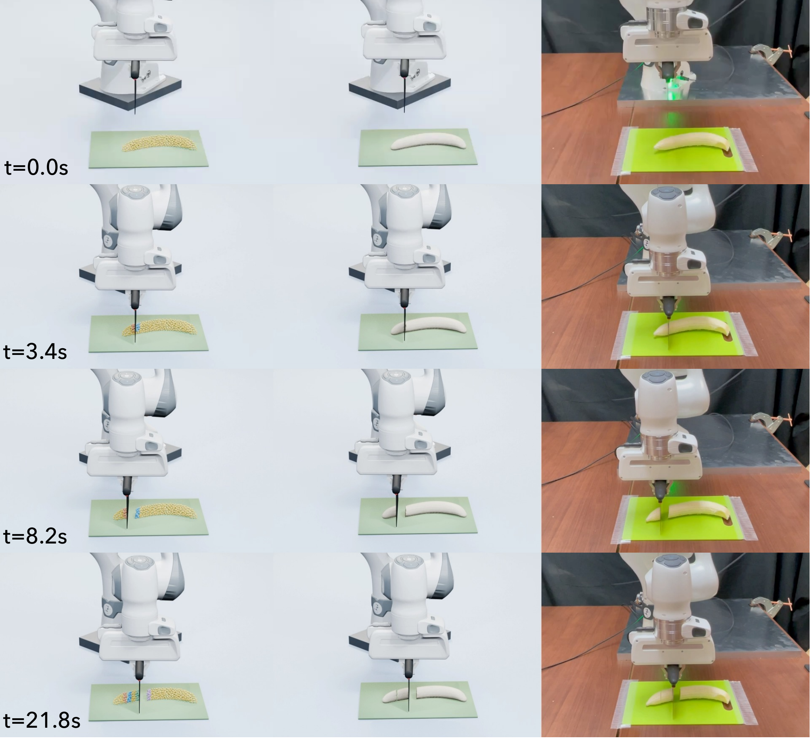
现有方法生成切口和保持材料分离的方式各有不同。基于网格的 DiSECt [1] 要求在仿真前指定整个切割面的几何形状，并在预处理时沿该面构造虚拟节点和切割弹簧。因此，材料只能沿预先定义的面分离。物质点法（MPM）适合模拟大变形，也能处理复杂、不断演化的损伤，但共享的网格状态可能使材料跨越切口出现虚假耦合。CPIC [4] 使用带颜色标记的距离场，阻止粒子–网格传递跨越刀具表面。这种分离仍与刀具几何绑定，撤刀后，两侧相邻的切面可能再次出现虚假耦合。CRESSim-MPM [5] 采用带符号距离函数，进一步简化了在切割边界两侧保持分离的处理。然而，该方法没有保留连续多刀造成的材料连通性累积变化，限制了对切割所得各块的独立操作。
我们提出 BladeMaster，一种根据刀刃运动在线生成切口、并将切口保留在材料状态中的 GPU 加速框架。我们采用全拉格朗日物质点法（TLMPM），在物体的参考构型中定义紧凑网格，使潜在耦合的邻域在材料运动时保持固定 [6]。TLMPM 消除了粒子跨单元误差和数值断裂，但需要显式表述材料分离。我们根据刀刃扫掠的几何形状给物质点赋予持久侧别标记，以编码这种分离。标记决定哪些物质点能够通过固定的参考网格交换动量。完好材料内部继续耦合，而撤刀后，切口两侧仍保持力学分离。后续的切割可用新的侧别标记表示，先前的标记继续保留。这样就能保留累积形成的材料不连续面，并独立操作切下的各块。借助这些持久标记，新生成的切面也能继续与刀具及彼此相互作用。接触模型在处理这些相互作用时仍区分切口两侧，使切面可以重新接触并相对滑动，同时保持分离。MPM 与刚体求解器之间的双向耦合会将材料反力传给刀具，使刀具运动能够响应材料状态的演化。
我们在切割与操作场景中评估框架，并与以往方法作比较。我们用真机实验（图 1）验证仿真中的切割和操作行为，并将预测的切割阻力与实物测量对照。GPU 实现在代表性任务中，以超过实时的速度模拟切割和随后的操作。主要贡献如下。
- •
提出基于 TLMPM 的切割方法，在线给物质点赋予持久侧别标记，以控制保持动量守恒的粒子–网格耦合，并在撤刀后保留不连续面。该方法支持逐步切割和相交切割，无需预设切割面或复制粒子。
- •
提出实时 GPU 框架，将演化中的切割拓扑与材料–材料接触、刀具–材料双向耦合结合起来。切面可以再次接触和相对滑动，同时保持分离，从而支持对切割所得各块的后续操作。
II 相关工作
切割与不连续感知仿真
MPM 中的断裂与切割
MPM 无须进行贴合边界的重网格化，即可处理大变形和材料分离。早期工作用多个速度场表示显式裂缝 [13]，并用内聚区模拟由刀具驱动的切割 [14]。后续基于损伤的方法模拟了连续体损伤和相场断裂 [15]、非局部各向同性和各向异性损伤 [16]，以及多体接触随时间演化的碎裂过程 [17]。较新的工作使用考虑损伤的富集基函数 [18]，也有方法在依据真实观测标定的具身可微框架中模拟损伤与撕裂 [19]。这些基于损伤的方法主要处理材料自身驱动的断裂。机器人切割则要求材料分离随运动中的刀具演化。CPIC [4] 将带颜色标记的距离场与粒子–网格相容性结合，在支持双向耦合的同时，阻止传递跨越切割面。不过，撤刀后，跨切口的粒子–网格传递可能恢复。CRESSim-MPM [5] 采用统一的带符号距离场（SDF）表述来处理切割边界分离和刚体接触。SDF 的符号决定粒子与网格是否相容，距离绝对值配合加厚的碰撞区域用于接触求解。该方法没有把连续切割引起的材料连通性累积变化编码为材料状态的一部分。TopoCut [3] 将 MLS-MPM、渐进损伤和拓扑重建用于多步机器人切割与策略学习。论文报告的粒子–网格传递仍然采用单场，未区分碎块身份。
全拉格朗日 MPM 与接触建模
III 方法
III-A 系统与记号
我们模拟一个与运动刚性刀具接触的可变形物体。物体离散为物质点，采用 TLMPM 进行时间步进。在时间步 ，刀具位姿 和空间速度 定义一个 MPM 子步中的接触几何与运动。接触求解器将所得冲量 施加给粒子 ，并返回刀具上对应的反力和反力矩（§III-E）。外部刚体系统负责刀具驱动、约束和状态更新。
粒子 保存参考位置 、当前位置 、速度 、变形梯度 、参考体积 和质量 。我们在标准 TLMPM 状态中增加切割进度变量 和切口侧别编码 。每一刀开始时，将 重置为零。每个子步都将材料–材料和刀具–材料的接触冲量散布到 TLMPM 网格。有效的刀具接触会推进 ，并调节阻碍刀刃运动的阻力。刀刃扫过的区域则根据粒子相对于刀刃的侧别更新 。从下一个 TLMPM 子步开始，新编码决定哪些粒子贡献可以共享网格状态（图 2）。同一次刀刃扫掠也会断开参考网格中被切到的连边，并触发局部表面重建。
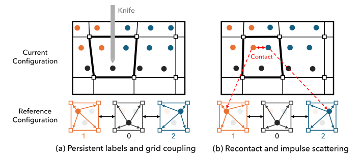
III-B TLMPM 离散化
我们采用 TLMPM 的显式修正应力后更新（MUSL）方案 [6]，下面概括切割和接触所需的量。用 标记参考网格节点，用 表示对应的插值函数。常规 MPM 在粒子当前位置计算插值权重及其梯度，TLMPM 则在固定的粒子参考位置计算它们。计算式如下。
| (1) |
所得粒子–网格插值模板保持不变，可以预先计算。在 TLMPM 中，材料运动不会在原参考邻域以外引入新的网格耦合。因此，只要更新切口侧别编码，就能控制材料连通性的变化。切口侧别编码 决定粒子 将质量、动量和内力冲量散布到哪个逻辑网格。在步长为 的 MPM 子步，施加耦合相容性之前，参考构型中的粒子到网格（P2G）传递先在每个逻辑网格 上分别累积这些量。
| (2) |
其中 为第一 Piola–Kirchhoff 应力。我们采用固定共旋本构模型，可选配 von Mises 型塑性投影与牛顿黏性。这些本构模型独立于切割表述。网格更新前，外部冲量和接触冲量也在相同的逻辑网格上累积。按 §III-D 实施相容性约束后，执行标准显式网格更新、PIC/FLIP 网格到粒子（G2P）传递和 MUSL 变形梯度更新 [6]。初始 P2G 传递和 MUSL 速度重映射都实施相容性约束。
III-C 切割阻力与侧别分配
连续切割时，我们用基于方向性接触功的经验定律更新 ，调节刀刃受到的阻力。刀刃扫掠几何决定持久侧别标记，用以编码拓扑分离。
刀刃局部坐标
对第 刀，令 为刀刃上的某一点。世界坐标系中的单位向量 、 和 分别表示切割面法向、沿有限长度刀刃的轴向和前后方向，其中 指向切割前方。用刀具当前位姿变换刀具坐标系中的对应固定量，即可得到这些量。对于粒子 ，定义 ，并计算以下各量。
| (3) |
其中， 表明粒子位于切割面的哪一侧， 衡量粒子沿有限长度刀刃的位置， 区分刀刃前方与后方的材料。令 为刀刃点 的速度。沿 的相对切割推进速度为 。给定带宽的一半 、刃长的一半 、向后延伸量 和向前延伸量 ，有限切割带定义如下。
| (4) |
方向性接触功
只有当接触位于切割带的前部（）且满足 时，才累积刀刃对粒子沿切割推进方向的接触功。这里 是最小切割推进速度。
| (5) |
乘积 近似表示沿切割推进方向的接触功增量。我们将经验功阈值定义为 ，其中 是材料单位面积的切割能量尺度， 表征刀刃锋利程度。在前部区域，沿 的正向接触冲量分量持续施加，直到累积的方向性接触功达到阈值，即 。达到阈值后，解除这一冲量分量。变量 只影响这一接触分量，本构应力保持不变。
侧别由刀刃扫掠的几何形状决定。切割带中尚未分配侧别的粒子位于刀刃后方时（），按下式为它分配侧别数位。
| (6) |
赋予侧别标记时，粒子的位置、速度和应力都不会瞬间改变。从下一个 TLMPM 子步开始，新的侧别才改变 P2G 相容关系和接触对的选择，详见 §III-D。
III-D 考虑拓扑的网格传递
切口侧别标记决定粒子如何共享网格状态。对于 道切割，每个粒子 为每一刀保存一个三进制侧别数位 。0 表示第 刀尚未切到该粒子，1 和 2 表示这道切口相对的两侧。粒子 的切口侧别编码定义如下。
| (7) |
对每一刀，数位只能从 0 变为 1 或 2。后续切割为新的数位赋值，已有的非零数位继续保留。因此，即使切口相交，每个粒子的编码也唯一确定。这种表述无须复制粒子即可支持逐步切割和相交切割。
若两个编码对至少一道切口记录的是相对两侧，则这两个编码冲突。
这里， 取出一个编码的第 个三进制数位。没有冲突的编码彼此相容。特别地，尚未分配侧别的数位 0 与两侧均相容。因此，刀刃前方的完好材料保持耦合，后方的切口两侧则继续分离〔图 2（a）〕。
用 表示完成 P2G 传递和冲量散布后，逻辑网格 在节点 上独立累积的状态。其中， 包含内部、外部和接触冲量。令 ，通过反对称的两两交换耦合相容的节点状态，使动量守恒。
| (8) |
每个逻辑网格保留其 P2G 质量 。如果某节点上已占用且相容的网格具有共同速度，动量耦合会保留该速度，因为此时每对网格的动量交换都为零。用耦合后的动量和累积冲量更新节点速度。
| (9) |
G2P 读取每个粒子自己的逻辑网格 。相容网格之间交换动量。发生冲突的网格即使参考插值模板重叠也保持分离，使切口相对两侧能够独立演化。我们的显式接触模型仍允许相对的切面再次接触，同时保持力学分离（§III-E）。切割带过窄可能留下尚未分配侧别的粒子，使切口两侧间接耦合。实际计算中取 ，其中 为参考网格间距。
初始 P2G 传递和 MUSL 对更新后粒子动量的再次散布使用同一套相容性耦合，保证两次操作依照同样的材料连通关系。附录证明了 PIC/FLIP 传递和 MUSL 再散布的动量守恒。
III-E 接触模型
分开的逻辑网格使切口两侧的粒子具有独立速度，但无法避免它们在当前构型中相互穿透。因此，我们检测物质点接触，并通过固定的参考插值模板散布所得冲量。沿用 TLMPM 接触模型 [20]，以统一的形式处理物体间接触、自接触、切面重新接触和刚性刀具接触。所有相互作用采用相同的库仑摩擦模型和冲量散布流程。持续存在的接触会保存切向历史，以表述静摩擦。
材料–材料接触
在接触计算中，用半径为 的球表示粒子 ，其中 是接触半径的缩放系数。对一对粒子 ，令 且 。我们使用下式预测重叠量，
| (10) |
并结合约化质量 求得法向力。
| (11) |
其中， 对法向接触响应进行缩放。对于自接触，排除参考构型中邻近的粒子对，因为连续体离散化已经将它们耦合。切口侧别编码冲突的粒子对不受这一排除规则限制，仍可作为切面接触的候选对。
为了模拟静摩擦，我们借鉴 TinyDEM 的切向弹簧历史模型 [22]。每处持续接触保存一个切向弹簧位移 ，每一步将其转移到当前切平面，得到 。对上面定义的材料粒子对，令 、、 和 。由此计算切向相对速度 与试算切向力 。
| (12) |
其中， 和 分别为切向刚度与阻尼系数。 是以 为基准的刚度缩放系数， 则为相对临界阻尼的阻尼比。静摩擦系数和动摩擦系数分别为 和 。当 时保留试算力。处于粘着时，保存 作为下一步的切向历史。一旦超过静摩擦上限，接触即切换到动摩擦，采用动摩擦的库仑上限 ，并调整已存位移以匹配实际施加的力。材料–材料与材料–刚体接触均使用同一带历史的模型。
将所得成对冲量 以大小相等、方向相反的形式分别施加给 和 ，随后散布到各自的逻辑网格。
| (13) |
下标 和 分别遍历粒子 与 的插值模板。因此，接触在当前构型中检测，所得冲量随后纳入基于固定参考构型的 TLMPM 更新〔图 2（b）〕。
刀具–材料接触
对粒子 ，采用前面定义的球形接触代理。在刀具碰撞几何上查询最近点，得到表面点 、外法向 和球与表面之间的带符号间隙 。利用前面定义的刀具位姿与空间速度，可以写出相对接触速度和预测间隙。
| (14) |
与材料–材料接触一样，球形代理的质量取粒子质量 。令 表示刚体在点 处沿 的有效质量的倒数。刀具运动由运动学预先给定时，取 。合成接触有效质量为 。使用 时，与式（11）对应的单步法向响应如下。
| (15) |
其中 表示预测到粒子与刀具会发生穿透。切向分量采用同一个带历史的库仑响应，将 和 代入式（12）计算。将最终冲量 散布到粒子所属的逻辑网格，并向刀具接口返回对应的反力 和反力矩 ，其作用方向与粒子所受作用相反。
| (16) |
因此，同一个接触冲量既更新材料的运动，也产生相应的刀具反作用，还为切割阻力模型提供所需的接触功。
III-F 基于参考网格的表面重建
为了可视化，我们采用连边体积表述 [23] 和局部对偶轮廓法 [24]，在均匀参考网格上重建可见边界。原始网格的连边与原始边界或刀刃生成的切割面的交点，以 Hermite 数据保存，每条数据包含一个点和一条法向。有限长度刀刃扫掠时，断开与扫掠区域相交的连边。在每个受影响的关联单元内，其余连边的连通分量划分出局部材料区域。只更新受影响单元，并为不同区域分别生成表面代表，以形成切口两侧位置重合的表面。
表面运动由 TLMPM 单向驱动。每个表面代表继承所属局部材料区域的切口侧别编码，并用固定的三线性权重嵌入相应的相容 TLMPM 运动场。这样，它随所在侧的材料形变运动，不引入额外动力学。连边的连通关系决定可视拓扑，考虑侧别的嵌入则使表面运动与力学不连续性一致。
III-G GPU 实现与刚性刀具接口
我们将应力计算、TLMPM 传递、接触处理、逻辑网格聚合和切割状态更新实现为 GPU 核函数。把活跃的拓扑编码压紧到连续的物理网格槽位，使内存与计算开销随活跃状态数量增长，无须按完整的 编码空间分配。外部刚体系统可以用低于 TLMPM 的频率更新刀具。在两次更新之间，刀具的位姿和空间速度在各 TLMPM 子步中保持不变。反作用冲量在这段时间内累积，并以该时间区间的平均力和力矩形式返回，以保持总线冲量和总角冲量。
IV 实验
IV-A 与现有切割机制的比较
基于网格的 DiSECt 方法 [1] 要求预定义切割面，BladeMaster 则可以在线生成切割面。为评估这一能力，我们在软弹性块上方释放一把质量为 、初始倾角为 的刀。软块的杨氏模量为 ，泊松比为 ，密度为 〔图 3（a）–（c）〕。此后，刀具只在重力与材料反力作用下运动。材料反力使刀具转动，并使其轨迹发生偏转。我们的方法沿这一演化中的轨迹在线生成切割面，因此材料响应能够影响切割几何。新产生的两侧切面随后重新接触并相对滑动，同时保持分离。在另一次降低刀刃锋利程度的运行中，刀具在重力作用下没有切穿软块〔图 3（d）〕。
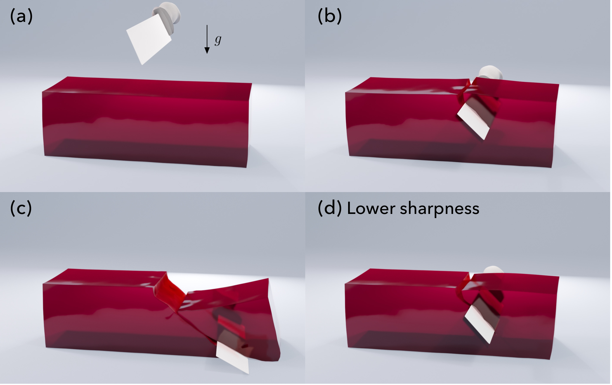
在单场 MPM 中，撤刀后，切口两侧可能通过共享网格节点重新耦合。为单独考察切口侧别相容性的作用，我们将 BladeMaster 与单场基线比较。基线在撤刀后进行粒子–网格传递时忽略切口侧别编码。两种仿真均采用同样的粒子采样和刀具运动，圆柱体的杨氏模量为 、泊松比为 、密度为 。仿真中的 Franka 机械臂沿径向切两刀形成一片材料，每切一刀都先撤刀，最后将刀插到薄片下方并将它抬起（图 4）。BladeMaster 中只有薄片被抬起，基线则因共享网格上的耦合一并抬起周围材料。这一对照说明持久侧别标记能在撤刀后保持力学分离。
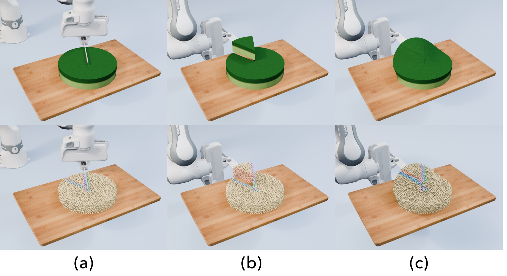
图 5 比较了 BladeMaster 与 CRESSim-MPM [5] 保留切割历史的方式。两道平行切口将长方体软块分成三块。两种方法使用相同的粒子采样、弹性参数、刀刃轨迹，以及厚度为 的刀刃。首刀切至一半时，BladeMaster 的平均切缝宽度为 ，接近刀刃厚度。CRESSim-MPM 的平均切缝宽度为 〔图 5（a1）、（a2）〕。两刀切完后，根据四面体体积估计的中间块体积收缩量，BladeMaster 为 ，CRESSim-MPM 为 〔图 5（b1）、（b2）〕。撤刀后，我们在两种仿真中仅给左块施加相同的向左初速度。图 5（c1）、（c2）展示经过相同时间后的状态。BladeMaster 中左块移开，中间块和右块保持在原位置附近。在 CRESSim-MPM 中，后续传递中的共享节点速度使动量在各块之间重新分配，导致中间块和右块也向左移动，而左块行进距离缩短。结果表明，BladeMaster 能在后续运动中保留材料连通性的累积变化，支持连续切割后对各块独立操作。
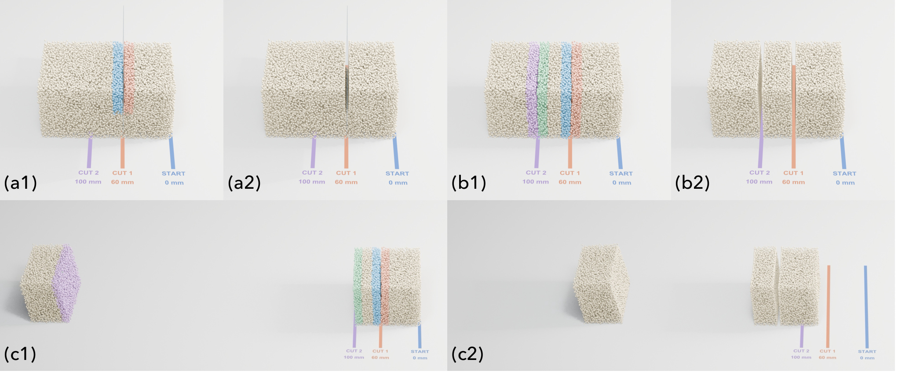
IV-B 切割场景
以下场景展示了该方法支持的几类切割相互作用。图 6 中，三把自由运动的刀具同时朝同一个可变形软块发射，初始速率从左到右分别为 、 和 。仿真无需预设它们的轨迹。刀具与可变形体通过双向耦合演化，材料反力使刀具减速，初始速率较高的刀切入更深。由于三刀的切割进度更新分别作用于不同的粒子集合，因此可以并行仿真。软块采用带 von Mises 塑性的固定共旋弹性模型，取 、 和 ，屈服应力为 。
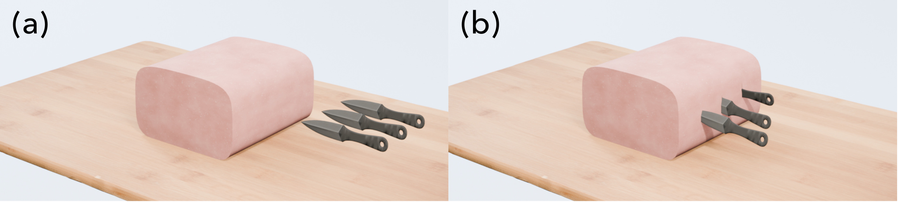
在图 7 中，Franka 机械臂引导刀尖沿十字形路径运动，形成相交的部分切口。为单独考察切入深度的影响，我们重复相同的平面内运动，仅改变刀尖切入材料的深度。浅切只留下轻微表面划痕，深切形成更明显的切口。两种情况下，两条切割路径都在中心相交，切口均未贯穿物体。软块的材料参数为 、 和 。
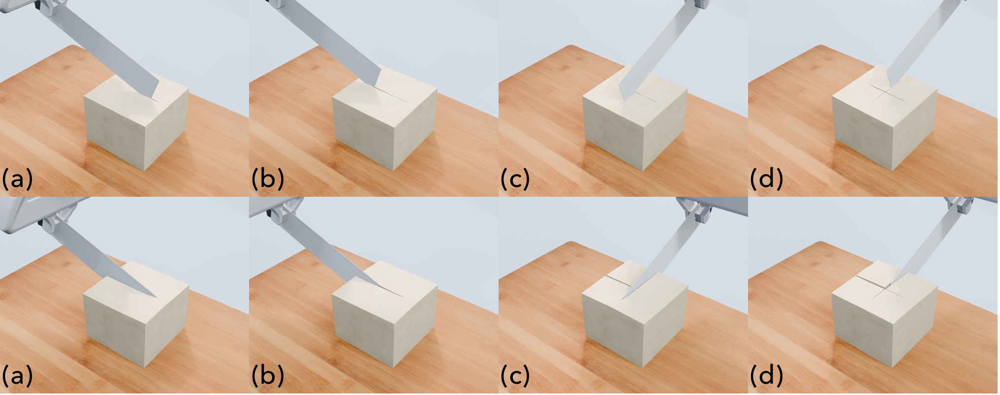
我们还用 Franka 机械臂演示了连续切片（图 8）。软块采用与自由运动刀具示例相同的材料参数。每切一刀，切口在刀刃上方逐渐张开，下方尚未切到的材料保持相连。随着各刀相继完成，切下的薄片倒下，接触砧板及此前切下的薄片，最终相互叠放。这个过程在同一任务中展示了逐步切割、持久分离，以及切下各片之间的接触。
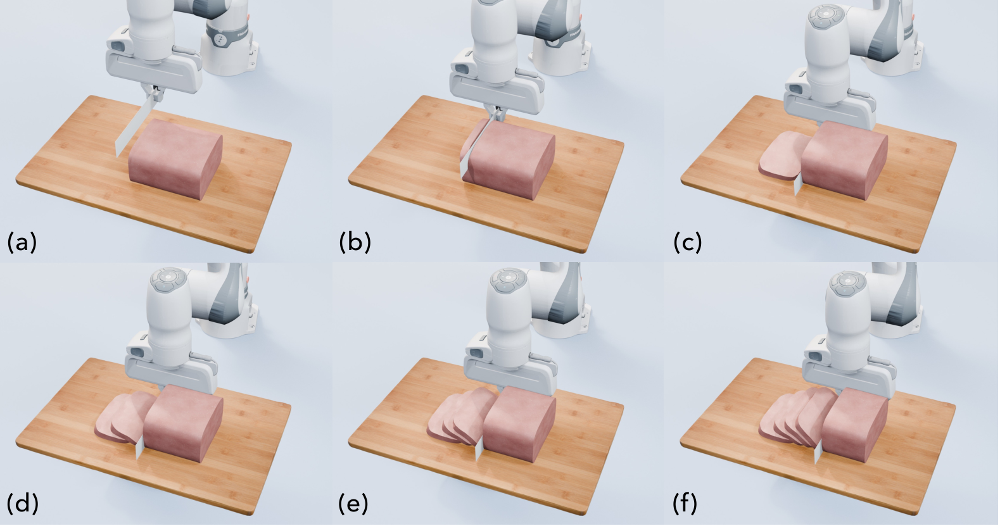
IV-C 真机实验与切割阻力评估
我们将本方法计算的切割阻力，与真机在一次竖直切香蕉时由关节力矩测量估计的阻力进行定量比较。香蕉组织模型的杨氏模量为 ，泊松比为 ，密度为 ，屈服应力为 。仿真中刀具的质量为 ，摩擦系数为 。我们设置 和 。图 9 展示了计算和测量得到的阻力曲线。我们还报告了 20 次不同粒子采样仿真的平均曲线，以及一次分辨率更高的细化仿真。刀具接触支撑物之前，仿真与实验在切割阶段的阻力量级相近。平均曲线与细化仿真的曲线波动更小，也更接近实验测量值。
我们还将仿真与真实香蕉切割实验作了定性比较（图 1）。仿真和实物实验中都执行相同的末端执行器轨迹。每切完一刀，刀具便把切下的块推到一旁。在图示各阶段，仿真中的分离和位移与实验十分接近。这个任务展示了切割与操作交替进行时，先前切割形成的分离仍能保留。
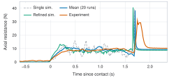
IV-D 运行时间与可扩展性
我们在 NVIDIA GeForce RTX 5090 上评估 BladeMaster。报告的计时覆盖仿真循环，表面重建和渲染不计入。表 I 汇总了代表性示例的离散化参数与运行时间统计。表中所有切割示例均快于实时。时间步长取 时，图 10 展示了运行时间随粒子数和切割次数变化的规律。紧凑分配只存储已占用的拓扑状态，所需网格槽位远少于完整的 编码空间。
| 示例 | 粒子数 | [ms] | 切割次数 | 实际耗时／仿真时长 |
|---|---|---|---|---|
| 重力驱动切割 | 8960 | 2 | 1 | 0.33 |
| 抬起薄片 | 8960 | 2 | 2 | 0.36 |
| 运动中的刀具 | 7922 | 1 | 3 | 0.62 |
| 刀尖划切 | 3584 | 2 | 2 | 0.30 |
| 连续切片 | 7922 | 1 | 4 | 0.56 |
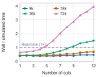
(a)
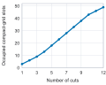
(b)
V 结论
我们提出 BladeMaster，一种基于 GPU 加速 TLMPM 的框架。它随刀刃运动逐步生成切口，无须预定义切割面。持久的粒子侧别标记使完好材料内部保持耦合，并阻止撤刀后相对的切面通过网格直接耦合。材料–材料接触让切面可以再次接触，同时继续保持分离。刀具与材料的双向耦合则使材料反力能够影响刀具运动和切割几何。仿真实验展示了切割和之后的操作，完成切割后未出现跨切口的虚假网格耦合，代表性任务的运行速度快于实时。真机实验中的切块分离和操作行为在定性上与仿真相似。
目前仍有若干局限。刀具–材料接触采用球形粒子代理及散布到网格的冲量，无法严格保证不穿透。模型只沿刀刃引起的切口产生拓扑分离，因而无法描述应力驱动的裂纹萌生、传播或非切割载荷下的破坏。紧凑分配避免创建全部 个状态，但活跃状态数仍可能随切口数量和布局增加。通过结合在线切口生成、持久分离和实时性能，BladeMaster 为高效的机器人切割策略学习与运动优化迈出了一步。
动量守恒
证明
对任意相容的有序对 ，式（8）中的交换项恰为 对应交换项的相反数。因此，对每个已占用节点， 且 。将 G2P 插值与 PIC/FLIP 速度更新结合，得到下式。
| (17) |
由于 ，记 ，可得下式。
| (18) |
上述结论对作用于已占用场的任意冲量以及任意共同的 成立。
MUSL 将 再次散布到各网格。同理，其总量为 。由于两两交换项互相抵消，耦合保持这一总量。∎
参考文献
- [1] (2021) DiSECt: a differentiable simulation engine for autonomous robotic cutting. In Proceedings of Robotics: Science and Systems, External Links: Document Cited by: §I, §I, §II, §IV-A.
- [2] (2023) RoboNinja: learning an adaptive cutting policy for multi-material objects. In Proceedings of Robotics: Science and Systems, External Links: Document Cited by: §I.
- [3] (2025) TopoCut: learning multi-step cutting with spectral rewards and discrete diffusion policies. In Proceedings of the 9th Conference on Robot Learning, Proceedings of Machine Learning Research, Vol. 305, pp. 1282–1310. Cited by: §I, §II.
- [4] (2018) A moving least squares material point method with displacement discontinuity and two-way rigid body coupling. ACM Transactions on Graphics 37 (4), pp. 1–14. External Links: Document Cited by: §I, §II.
- [5] (2025) CRESSim-MPM: a material point method library for surgical soft body simulation with cutting and suturing. In 2025 IEEE/RSJ International Conference on Intelligent Robots and Systems (IROS), pp. 11247–11254. External Links: Document Cited by: §I, §II, §IV-A.
- [6] (2020) A total-lagrangian material point method for solid mechanics problems involving large deformations. Computer Methods in Applied Mechanics and Engineering 360, pp. 112783. External Links: Document Cited by: §I, §II, §III-B, §III-B, Proposition 1.
- [7] (2004) A virtual node algorithm for changing mesh topology during simulation. ACM Transactions on Graphics (TOG) 23 (3), pp. 385–392. Cited by: §II.
- [8] (2007) Arbitrary cutting of deformable tetrahedralized objects. In Proceedings of the 2007 ACM SIGGRAPH/Eurographics symposium on Computer animation, pp. 73–80. Cited by: §II.
- [9] (2009) Stable cutting of deformable objects in virtual environments using xfem. IEEE computer graphics and applications 29 (02), pp. 61–71. Cited by: §II.
- [10] (2017) Robust extended finite elements for complex cutting of deformables. ACM Transactions on Graphics (TOG) 36 (4), pp. 1–13. Cited by: §II.
- [11] (2024) Generalized extended finite element method for deformable cutting via boolean operations. In Computer Graphics Forum, Vol. 43, pp. e15184. Cited by: §II.
- [12] (2025) Lifting the winding number: precise discontinuities in neural fields for physics simulation. In Proceedings of the Special Interest Group on Computer Graphics and Interactive Techniques Conference Conference Papers, pp. 1–11. Cited by: §II.
- [13] (2003) Material point method calculations with explicit cracks. Computer Modeling in Engineering and Sciences 4 (6), pp. 649–664. Cited by: §II.
- [14] (2015) Numerical simulation of orthogonal cutting using the material point method. Engineering Fracture Mechanics 149, pp. 262–275. Cited by: §II.
- [15] (2019) CD-mpm: continuum damage material point methods for dynamic fracture animation. ACM Transactions on Graphics (TOG) 38 (4), pp. 1–15. Cited by: §II.
- [16] (2020) AnisoMPM: animating anisotropic damage mechanics. ACM Transactions on Graphics (TOG) 39 (4), pp. 37–1. Cited by: §II.
- [17] (2021) DP-mpm: domain partitioning material point method for evolving multi-body thermal–mechanical contacts during dynamic fracture and fragmentation. Computer Methods in Applied Mechanics and Engineering 385, pp. 114063. Cited by: §II.
- [18] (2024) Diffusive-discrete crack transition without remeshing achieved by extended b-spline-based implicit material point method. Computer Methods in Applied Mechanics and Engineering 421, pp. 116771. Cited by: §II.
- [19] (2026) Empm: embodied mpm for modeling and simulation of deformable objects. IEEE Robotics and Automation Letters. Cited by: §II.
- [20] (2021) Modelling contacts with a total lagrangian material point method. Computer Methods in Applied Mechanics and Engineering 373, pp. 113503. External Links: Document Cited by: §II, §III-E.
- [21] (2025) A new contact algorithm for the total-lagrangian material point method. International Journal for Numerical Methods in Engineering 126 (17), pp. e70105. Cited by: §II.
- [22] (2026) TinyDEM: minimal open granular DEM code with sliding, rolling and twisting friction. Computer Physics Communications 320, pp. 109942. External Links: Document Cited by: §III-E.
- [23] (2011) Interactive high-resolution boundary surfaces for deformable bodies with changing topology. In Proceedings of the 8th Workshop on Virtual Reality Interaction and Physical Simulation, pp. 29–38. External Links: Document Cited by: §III-F.
- [24] (2002) Dual contouring of hermite data. In Proceedings of the 29th Annual Conference on Computer Graphics and Interactive Techniques, pp. 339–346. External Links: Document Cited by: §III-F.